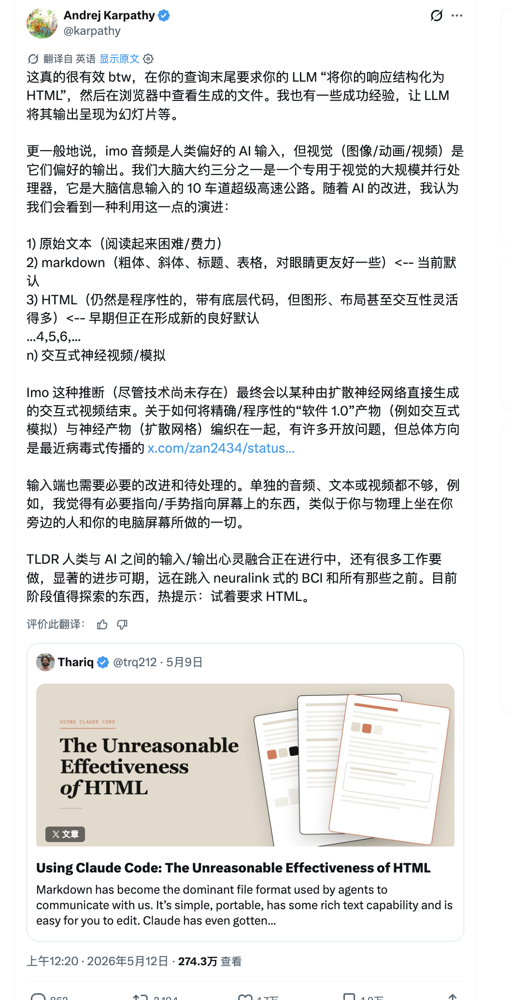

human insert later
Director intent
导演意图
Review the actual video before generation.
先审查真实视频方向，再生成。
This is the pre-render review layer for the existing HyperFrames composition: six locked frames, local assets, motion intent, snapshots, and final index.html mapping.
这是现有 HyperFrames composition 的预渲染审查层：6 个锁定帧、本地素材、动效意图、快照和最终 index.html 映射。
网页，正在变成新的编导台

人类吃信息，靠视觉和声音
不是文档，是可看的例子
网页输出，已经有人在做
先生成编导台，再生成视频
01
Asset Wall
素材墙
Thariq article hook
Frame 02. Large article card, sparse title, visible internal crop/pan motion.
第 2 帧。文章大卡片、稀疏标题、可见内部裁切/平移动效。
Karpathy quote crop
Frame 03. Authority proof, cropped to readable information-density argument.
第 3 帧。权威证据，裁切到可读的信息密度论点。
HTML effectiveness examples
Frame 04. The webpage proves that HTML can become visible examples.
第 4 帧。网页证明 HTML 可以变成可看的例子。
Tom / html-anything
Frame 05. Full-size market signal, not a small inset.
第 5 帧。完整市场信号，不是小 inset。
My HTML workbench
Frame 06. The final proof: review first, then generate the video.
第 6 帧。最终证据：先生成编导台，再生成视频。
02
Rhythm Storyboard
节奏分镜
OPENING SLOT
网页，正在变成新的编导台
人类吃信息，靠视觉和声音
不是文档，是可看的例子
网页输出，已经有人在做
先生成编导台，再生成视频
03
Critical Frame Mockups
关键帧预览
human insert later
OPENING SLOT
Blank Figma artboard with dashed placeholder.
网页，正在变成新的编导台
Article card slides in, then slow crop drift.
人类吃信息，靠视觉和声音
Readable authority crop, not a full text wall.
不是文档，是可看的例子
Examples page scrolls as visual proof.
网页输出，已经有人在做
Tom/html-anything holds as a full frame.
先生成编导台，再生成视频
Workflow scroll carries the ending weight.
04
Visual System Lock
True 1080x1920 / 9:16 Figma-style artboards, not a horizontal webpage recording.
网页式编导台Title-card text onlyNo subtitles, no voice
Board UI can switch language; final video titles stay as locked source content.
Source cardSelection outlineProgress pill
Local media cards, dashed selection language, restrained Figma accents.
05
Motion Timeline
运动时间线
00:00Almost still
Blank artboard reserves the human opening slot.
00:15Article drift
Large source card slides in and slowly pans.
00:45Quote crop
Screenshot gently zooms into the readable quote.
01:15Source scroll
Examples page moves inside the proof card.
01:50Full-frame signal
Tom/html-anything stays full-size, not inset.
02:20Workflow hold
Workbench scroll becomes the final proof.
06
Review Gate Summary
审查门槛摘要
6 locked frames5 must-use assets visibleFinal index mappedSnapshots includedPreview MP4 includedFrame style locked
00:00 / 01 SLOT
OPENING SLOT
human insert later
00:15 / 02 HOOK
网页，正在变成新的编导台
00:45 / 03 AUTHORITY
人类吃信息，靠视觉和声音
01:15 / 04 EXAMPLES
不是文档，是可看的例子
01:50 / 05 HTML-ANYTHING
网页输出，已经有人在做
02:20 / 06 WORKFLOW